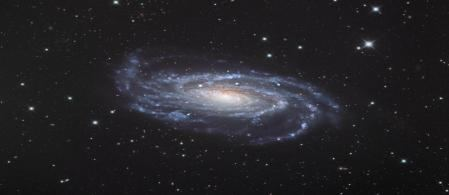

Is the Sun supposed to catch up with the Moon, as the above verse says: "It is not permitted to the sun to catch up the moon?" The Moon had to be big enough so that it could produce proper crescent shapes, and a person could understand the date by seeing its shape. The size of the Moon is one-fourth (27%) of the size of the Earth in diameter. In addition, the distance between the Earth and the Moon is precisely determined to ensure that the Moon illuminates the Earth as intended. Many nocturnal animals are active at night and rest during the day. The Moon‘s proper proximity to the Earth also generates the appropriate tides. The challenge lies in the fact that the Earth needed to be reasonably close to the Sun to receive proper illumination. And, it (Sun) is 332,946 times more massive than the Earth, making its gravitational pull on the Moon significantly stronger than the Earth's. For this reason, the Sun should have pulled the Moon away from the Earth and turned it into a planet of its own. How is this issue resolved? The problem is resolved by reducing the mass of the Moon while maintaining its appropriate size. The Moon‘s mass is only one eighty-first (1/81) of the Earth‘s mass. As a result, the center of gravity (CG) of the Earth-Moon system is located within the Earth, approximately a thousand miles below its surface. This positioning causes the Sun's gravitational force to act on the Moon indirectly, through the Earth. If the Moon‘s mass were greater, the center of gravity (CG) of the Earth-Moon system would shift farther away from the Earth. In such a scenario, the Earth and the Moon would rotate around this shifted CG. Over time, the Moon could escape its orbit around the Earth and become a planet of the Sun. The Moon generates tides through its gravitational force, so its mass could not be reduced excessively. Therefore, the sizes, masses, and distances of the Sun, Earth, and Moon are precisely balanced by Allah. The verses finally state: "…but all are in a falakin they are floating." The term 'falakin' can mean 'ship,' or 'space,' or a 'domain of space,' but it is commonly translated as 'orbit' in this verse. Using 'domain of space' is more appropriate because it indicates 'Milky Way Galaxy' where the Sun, the Earth, and the Moon are floating.
সূর্য কি চাঁদের সাথে মিলিত হওয়ার কথা, যেমন উপরের আয়াতে বলা হয়েছে: "সূর্যের জন্য চাঁদকে ধরার অনুমতি নেই?" চাঁদকে যথেষ্ট বড় হতে হবে যাতে এটি সঠিক অর্ধচন্দ্রাকার আকার তৈরি করতে পারে এবং একজন ব্যক্তি তার আকৃতি দেখে তারিখটি বুঝতে পারে। চাঁদের আকার পৃথিবীর আয়তনের এক-চতুর্থাংশ (27%) ব্যাসের। উপরন্তু, পৃথিবী এবং চাঁদের মধ্যে দূরত্ব সুনির্দিষ্টভাবে নির্ধারিত হয় যাতে চাঁদ পৃথিবীকে উদ্দেশ্য অনুযায়ী আলোকিত করে। অনেক নিশাচর প্রাণী রাতে সক্রিয় থাকে এবং দিনে বিশ্রাম নেয়। পৃথিবীর সাথে চাঁদের যথাযথ নৈকট্যও উপযুক্ত জোয়ার সৃষ্টি করে। চ্যালেঞ্জটি এই সত্যের মধ্যে রয়েছে যে সঠিক আলোকসজ্জা পাওয়ার জন্য পৃথিবীর যুক্তিসঙ্গতভাবে সূর্যের কাছাকাছি হওয়া দরকার। এবং, এটি (সূর্য) পৃথিবীর চেয়ে 332,946 গুণ বেশি বৃহদায়তন, চাঁদের উপর এর মহাকর্ষীয় টান পৃথিবীর তুলনায় উল্লেখযোগ্যভাবে শক্তিশালী করে তোলে। এই কারণে, সূর্যের উচিত ছিল পৃথিবী থেকে চাঁদকে টেনে এনে নিজের একটি গ্রহে পরিণত করা। কিভাবে এই সমস্যা সমাধান করা হয়? সঠিক আকার বজায় রেখে চাঁদের ভর কমিয়ে সমস্যার সমাধান করা হয়। চাঁদের ভর পৃথিবীর ভরের মাত্র এক আশিতম (1/81)। ফলস্বরূপ, পৃথিবী-চাঁদ সিস্টেমের মাধ্যাকর্ষণ কেন্দ্র (CG) পৃথিবীর মধ্যে অবস্থিত, তার পৃষ্ঠের প্রায় এক হাজার মাইল নীচে। এই অবস্থানের কারণে সূর্যের মাধ্যাকর্ষণ শক্তি পৃথিবীর মাধ্যমে পরোক্ষভাবে চাঁদে কাজ করে। চাঁদের ভর বেশি হলে পৃথিবী-চাঁদ সিস্টেমের মাধ্যাকর্ষণ কেন্দ্র (CG) পৃথিবী থেকে আরও দূরে সরে যেত। এমন পরিস্থিতিতে, পৃথিবী এবং চাঁদ এই স্থানান্তরিত সিজির চারপাশে ঘুরবে। সময়ের সাথে সাথে, চাঁদ পৃথিবীর চারপাশে তার কক্ষপথ এড়িয়ে যেতে পারে এবং সূর্যের একটি গ্রহে পরিণত হতে পারে। চাঁদ তার মাধ্যাকর্ষণ শক্তির মাধ্যমে জোয়ার সৃষ্টি করে, তাই এর ভর অত্যধিক কমানো যায় না। অতএব, সূর্য, পৃথিবী এবং চাঁদের আকার, ভর এবং দূরত্ব আল্লাহ সুনির্দিষ্টভাবে ভারসাম্যপূর্ণ। আয়াতগুলো শেষ পর্যন্ত বলে: "...কিন্তু সবাই ফালাকিনে ভাসছে।" 'ফালাকিন' শব্দের অর্থ 'জাহাজ' বা 'মহাকাশ' বা 'মহাকাশের ডোমেইন' হতে পারে, তবে এই আয়াতে এটি সাধারণত 'কক্ষপথ' হিসাবে অনুবাদ করা হয়েছে। 'স্পেসের ডোমেইন' ব্যবহার করা আরও উপযুক্ত কারণ এটি 'মিল্কি ওয়ে গ্যালাক্সি' নির্দেশ করে যেখানে সূর্য, পৃথিবী এবং চাঁদ ভাসছে।
FIGURE 36.3: A Ship Floating (Galaxy, NGC 5033) The galaxy, carrying its stars and planets, is moving toward the Great Attractor at a speed of 200 million kilometers per hour.

চিত্র 36_3 / Figure 36_3
চিত্র 36.3: একটি জাহাজ ভাসমান (Galaxy, NGC 5033) গ্যালাক্সি, তার নক্ষত্র এবং গ্রহগুলিকে বহন করে, প্রতি ঘন্টায় 200 মিলিয়ন কিলোমিটার বেগে গ্রেট অ্যাট্রাক্টরের দিকে এগিয়ে চলেছে৷
চিত্র 36_3 / Figure 36_3
And a sign for them is that We bore their race in the loaded Ark, and We have created for them similar (vessels) on which they ride. If it were Our will, We could drown them, then would there be no helper, nor could they be delivered, except by way of mercy from Us, and by way of convenience for a time.
আর তাদের জন্য একটি নিদর্শন এই যে, আমরা বোঝাই জাহাজে তাদের দৌড়ের ভার বহন করেছিলাম এবং তাদের জন্য সৃষ্টি করেছি অনুরূপ জাহাজ, যাতে তারা আরোহণ করে। যদি আমাদের ইচ্ছা হত, আমরা তাদের ডুবিয়ে দিতে পারতাম, তাহলে কি কোন সাহায্যকারী থাকবে না এবং তাদের উদ্ধার করাও যাবে না, আমাদের পক্ষ থেকে রহমত এবং কিছু সময়ের জন্য সুবিধার উপায় ছাড়া।
The preceding verses indicate that masses and distances of Sun, Earth, and Moon are precisely balanced. These balanced masses and distances play crucial roles in generating proper tides in the oceans. The Sun is twenty-seven million times more massive than the Moon, but it is 390 times farther away than the Earth from the Moon. As a result, the Sun‘s tidal force is about half (46%) of that exerted by the Moon. Therefore, the Moon‘s gravitational force is the dominant factor in influencing the tides and the currents they produce. The verses mention the movement of ships on the oceans. If the tides were improper, the oceans would become turbulent with powerful currents, making travel at sea risky! The verses refer to the boat of Noah, suggesting that Noah‘s flood was also related to the tides. In Section-10 of Chapter-7, we discussed how a higher tide in the Atlantic and Mediterranean Seas could have opened the Bosporus, flooding the region around the Black Sea and Caspian Sea, where the People of Noah lived. This flooding was further supplemented by persistent rainfall, and likely by fountains from a melting ice cap.
পূর্ববর্তী আয়াতগুলি নির্দেশ করে যে সূর্য, পৃথিবী এবং চাঁদের ভর এবং দূরত্ব সুনির্দিষ্টভাবে ভারসাম্যপূর্ণ। এই ভারসাম্যপূর্ণ ভর এবং দূরত্বগুলি মহাসাগরে যথাযথ জোয়ার সৃষ্টিতে গুরুত্বপূর্ণ ভূমিকা পালন করে। সূর্য চাঁদের চেয়ে সাতাশ মিলিয়ন গুণ বেশি বিশাল, তবে এটি চাঁদ থেকে পৃথিবীর চেয়ে 390 গুণ বেশি দূরে। ফলস্বরূপ, সূর্যের জোয়ার-ভাটা চাঁদের দ্বারা প্রয়োগ করা প্রায় অর্ধেক (46%)। অতএব, চাঁদের মাধ্যাকর্ষণ শক্তি জোয়ার এবং স্রোতগুলিকে প্রভাবিত করার প্রধান কারণ। আয়াতে সমুদ্রে জাহাজ চলাচলের কথা বলা হয়েছে। জোয়ার-ভাটা অনুপযুক্ত হলে, শক্তিশালী স্রোতে সমুদ্র উত্তাল হয়ে উঠত, সমুদ্রে ভ্রমণকে ঝুঁকিপূর্ণ করে তুলত! আয়াতগুলো নোহের নৌকার কথা উল্লেখ করে, ইঙ্গিত করে যে নোহের বন্যাও জোয়ারের সাথে সম্পর্কিত ছিল। অধ্যায়-7-এর ধারা-10-এ, আমরা আলোচনা করেছি যে কীভাবে আটলান্টিক এবং ভূমধ্যসাগরে উচ্চতর জোয়ার বসপোরাসকে খুলে দিতে পারে, কৃষ্ণ সাগর এবং কাস্পিয়ান সাগরের আশেপাশের অঞ্চলকে প্লাবিত করে, যেখানে নূহের লোকেরা বাস করত। এই বন্যাটি অবিরাম বৃষ্টিপাত এবং সম্ভবত একটি গলে যাওয়া বরফের টুপি থেকে ফোয়ারা দ্বারা সম্পূরক হয়েছিল।
When they are told, "Guard against what is before you and what will be after you in order that ye may receive mercy." Not a verse comes to them from among the verses of their Lord but they turn away there-from. And when they are told, "Spend ye of with which God has provided you," the Unbelievers say to those who believe, "Shall we then feed those whom, if God had so willed, He would have fed; ye are in nothing but manifest error." Further they say, "When will this promise if what ye say is true?" They will not wait for aught but a single blast; it will seize them while they are yet disputing among themselves! And they will not be able (to give) any instruction, nor to their people can they return! The trumpet shall be sounded, when behold, from the sepulchers (men) will rush forth to their Lord! They will say, "Ah! Woe unto us! Who has raised us up from our beds of repose?‖ This is what Most Gracious had promised. And true was the word of the apostles! It will be no more than a single blast, when lo, they will all be brought up before Us! Then, on that Day not a soul will be wronged in the least, and ye shall but be repaid the meeds of your past deeds. Verily, the companions of the Jannaat shall that Day have joy in all that they do. They and their associates will be in groves of shade reclining on thrones. Fruit will be there for them. They shall have whatever they call for—Peace—a word from a Lord Most Merciful! And O ye in sin! Get ye apart this Day! Did I not enjoin on you, O ye Children of Adam, that ye should not worship Satan, for that he was to you an enemy avowed, and that ye should worship Me—this was the Straight Way. But he did lead astray a great multitude of you. Did ye not then understand? This is the hell of which ye were warned! Embrace ye the (hell) this Day, for that ye rejected." That Day shall We set a seal on their mouths, but their hands will speak to us, and their feet bear witness to all that they did. If it had been our will, We could have obliterated their eyes and they would race to the path, but how could they see? And if it had been Our will, We could have transformed them in their places, so they would not be able to proceed, nor could they return. If We grant long life to any, We cause him to be reversed in nature; will they not then understand?
যখন তাদেরকে বলা হয়, "তোমাদের সামনে যা আছে এবং যা তোমাদের পরে হবে তার থেকে হেফাজত কর যাতে তোমরা রহমত প্রাপ্ত হও।" তাদের কাছে তাদের পালনকর্তার আয়াতের মধ্য থেকে কোন আয়াত আসে না কিন্তু তারা সেখান থেকে মুখ ফিরিয়ে নেয়। আর যখন তাদেরকে বলা হয়, আল্লাহ তোমাদেরকে যে রিযিক দিয়েছেন তা থেকে ব্যয় কর, তখন কাফেররা ঈমানদারদেরকে বলে, "তাহলে কি আমরা তাদের খাওয়াবো, যাদেরকে আল্লাহ ইচ্ছা করলে তিনি খাওয়াতেন, তোমরা তো প্রকাশ্য ভ্রান্তিতেই আছ।" তারা আরও বলে, "তোমরা যা বলছ তা হলে এই প্রতিশ্রুতি কখন হবে?" তারা একটি বিস্ফোরণ ছাড়া আর কিছুর জন্য অপেক্ষা করবে না; এটা তাদের পাকড়াও করবে যখন তারা নিজেদের মধ্যে বিতর্ক করছে। এবং তারা কোন নির্দেশ দিতে পারবে না এবং তাদের সম্প্রদায়ের কাছে ফিরে আসতে পারবে না! শিঙা বাজানো হবে, যখন দেখ, কবর থেকে (মানুষ) তাদের পালনকর্তার দিকে ছুটে আসবে! তারা বলবে, "আহ! আফসোস! কে আমাদেরকে আমাদের বিশ্রামের শয্যা থেকে উঠিয়েছে? - এটা কি পরম করুণাময় প্রতিশ্রুতি দিয়েছিলেন? এবং প্রেরিতদের কথা সত্য ছিল! এটি একটি মাত্র বিস্ফোরণ ছাড়া আর কিছু হবে না, যখন দেখ, তারা সকলেই আমাদের সামনে উপস্থিত হবে! তারপর, সেদিন কোন প্রাণের প্রতি সামান্যতমও জুলুম করা হবে না, এবং তোমাদের অতীতের প্রতিদান করা হবে। জান্নাতের সাথীরা তাদের সমস্ত কিছুতে আনন্দ পাবে যে তারা সিংহাসনে বসে থাকবে শয়তান, কারণ সে তোমাদের জন্য প্রত্যাখ্যান করেছিল, আর এটাই ছিল সরল পথ, কিন্তু সে তোমাদের অনেককে বিপথগামী করেছিল, যার কারণে তোমরা আজকে জাহান্নামকে আলিঙ্গন করছ? সেদিন আমি তাদের মুখে মোহর মেরে দেব, কিন্তু তাদের হাত আমাদের সাথে কথা বলবে এবং তাদের পা সাক্ষ্য দেবে তারা যা করেছে। যদি আমাদের ইচ্ছা থাকত, তবে আমরা তাদের চোখ মুছে ফেলতে পারতাম এবং তারা পথের দিকে ছুটে যেত, কিন্তু তারা কীভাবে দেখতে পাবে? আর যদি আমাদের ইচ্ছা হত, তবে আমরা তাদের তাদের জায়গায় পরিবর্তন করতে পারতাম, ফলে তারা অগ্রসর হতে পারত না এবং ফিরে যেতেও পারত না। আমরা যদি কাউকে দীর্ঘায়ু দান করি, তাকে প্রকৃতির বিপরীত করে দেই; তারা কি বুঝবে না?
We have not instructed the (Prophet) in Poetry, nor is it meet for him, this is no less than a Message, and a Qur'an making things clear. That it may give admonition to any alive and that the charge may be proved against those who reject.
আমরা (নবীকে) কবিতায় নির্দেশ দেইনি, এবং তা তাঁর জন্যও পূরণ হয় না, এটি একটি বার্তার চেয়ে কম নয় এবং কুরআন বিষয়গুলিকে স্পষ্ট করে দেয়। যাতে এটি যেকোন জীবিতকে উপদেশ দেয় এবং যারা অস্বীকার করে তাদের বিরুদ্ধে অভিযোগ প্রমাণিত হয়।
The Quran is not poetry, though it is written in a poetic style to aid memorization, protect the verses from unconscious corruption, inspire recurrent recitation, and touch the hearts. However, it is not poetry in the traditional sense. It does not use one thing to represent another, except in certain verses that are meant as similitude or parables. Through the verses under discussion, the Quran encourages us to accept the direct meaning of the text.
কোরান কবিতা নয়, যদিও এটি একটি কাব্যিক শৈলীতে লেখা হয়েছে মুখস্থ করতে সাহায্য করার জন্য, আয়াতগুলিকে অচেতন কলুষতা থেকে রক্ষা করতে, বারবার আবৃত্তি করতে অনুপ্রাণিত করতে এবং হৃদয় স্পর্শ করতে। তবে এটি প্রচলিত অর্থে কবিতা নয়। এটি একটি জিনিসকে অন্যটির প্রতিনিধিত্ব করার জন্য ব্যবহার করে না, নির্দিষ্ট কিছু আয়াত ব্যতীত যা উপমা বা দৃষ্টান্ত হিসাবে বোঝানো হয়। আলোচ্য আয়াতের মাধ্যমে কুরআন আমাদের পাঠ্যের সরাসরি অর্থ গ্রহণ করতে উৎসাহিত করে।
See they not that We have created for them, from what our hands have made, grazing livestock, and they are their owners. And that We have subjected them to their: of them some do carry them, and some they eat, and they have profits from them, and they get to drink—will they not then be grateful? Yet they take gods other than God that they might be helped! They have not the power to help them, but they will be brought up as a troop. Let not their speech then grieve thee. Verily, We know what they hide as well as what they disclose. Does not man see that it is We Who created him from a nutfatin (drop / blastocyst)? Yet, behold, he (stands forth) as an open adversary! And he makes comparisons for Us and forgets his own creation! He says, "Who can give life to bones and decomposed ones?" Say: He will give them life Who created them for the first time, for He is well-versed in every kind of creation! The same Who produces for you fire out of the green tree when, behold, ye kindle therewith! Remarks:
তারা কি দেখে না যে, আমি তাদের জন্য সৃষ্টি করেছি, আমাদের হাতের তৈরি জিনিস থেকে, চারণকারী পশু, এবং তারা তাদের মালিক। আর যে আমি তাদেরকে তাদের অধীন করে দিয়েছি: তাদের মধ্যে কেউ কেউ বহন করে, কেউ কেউ খায় এবং তাদের থেকে তাদের লাভ হয় এবং তারা পান করে, তাহলে কি তারা কৃতজ্ঞ হবে না? অথচ তারা ঈশ্বর ব্যতীত অন্য উপাস্য গ্রহণ করে যাতে তারা সাহায্য পায়। তাদের সাহায্য করার ক্ষমতা তাদের নেই, কিন্তু তারা একটি সৈন্য হিসাবে প্রতিপালিত হবে। তাদের কথা যেন তোমাকে দুঃখ না দেয়। তারা যা গোপন করে এবং যা প্রকাশ করে তা আমরা জানি। মানুষ কি দেখে না যে, আমরাই তাকে সৃষ্টি করেছি নাটফাটিন (ড্রপ/ব্লাস্টোসিস্ট) থেকে? অথচ, দেখো, সে প্রকাশ্য বিপক্ষ হিসেবে দাঁড়িয়ে আছে! এবং সে আমাদের জন্য তুলনা করে এবং তার নিজের সৃষ্টিকে ভুলে যায়! তিনি বলেন, "হাড় এবং পচনশীলকে কে জীবন দিতে পারে?" বলুন, তিনিই তাদের জীবন দেবেন যিনি তাদের প্রথমবার সৃষ্টি করেছেন, কেননা তিনি সর্বপ্রকার সৃষ্টির বিষয়ে সম্যক জ্ঞান রাখেন। যিনি তোমাদের জন্য সবুজ বৃক্ষ থেকে আগুন উৎপন্ন করেন, যখন তোমরা তা দিয়ে জ্বালাও! মন্তব্য:
Allah is well-versed in every kind of creation. The plants are only means that store the energy of the sun through photosynthesis. It is a unique system.
আল্লাহ সর্বপ্রকার সৃষ্টির উপরই সর্বজ্ঞ। গাছপালা হল একমাত্র উপায় যা সালোকসংশ্লেষণের মাধ্যমে সূর্যের শক্তি সঞ্চয় করে। এটি একটি অনন্য সিস্টেম।
Is not He Who created the Skies and Lands (the universe) able to create the like thereof? Yea indeed, for He is the Creator Supreme, of skill and knowledge! Verily, when He intends a thing His Command is, "Be", and it is! So, glory to Him in Whose hands is the dominion of all things, and to Him will ye be all brought back.
যিনি আকাশ ও ভূমি সৃষ্টি করেছেন তিনি কি এর মত সৃষ্টি করতে সক্ষম নন? হ্যাঁ, প্রকৃতপক্ষে, তিনিই সৃষ্টিকর্তা সর্বশ্রেষ্ঠ, দক্ষতা ও জ্ঞানের অধিকারী! নিঃসন্দেহে তিনি যখন কোন কিছুর ইচ্ছা করেন তখন তাঁর হুকুম হয়, ‘হও’ এবং তা হয়ে যায়! অতএব, তাঁরই মহিমা, যাঁর হাতে সমস্ত কিছুর কর্তৃত্ব এবং তাঁর কাছেই তোমাদের সকলকে ফিরিয়ে আনা হবে।
―Be‖ and it is!
"হও" এবং তাই!
In the above verse, the words "Be,' and it is!" express the power of Allah in the repetition of creation. The ability of Allah is always absolute. The following verse narrates His power of creation at the fundamental level:
উপরের আয়াতে "হও,' এবং তা হল!" সৃষ্টির পুনরাবৃত্তিতে আল্লাহর শক্তি প্রকাশ করুন। আল্লাহর ক্ষমতা সর্বদাই নিরঙ্কুশ। নিম্নলিখিত আয়াতটি মৌলিক স্তরে তাঁর সৃষ্টির ক্ষমতা বর্ণনা করে:
―To Him is due the primal origin of the Skies and Lands; when He decrees a matter, He says to it: "Be", and it is.‖ [Al Quran 2:117]
- আকাশ ও ভূমির আদি উৎপত্তি তাঁরই কাছে; যখন তিনি কোন বিষয়ে ফয়সালা করেন, তখন তিনি তাকে বলেন: "হও" এবং তা হয়ে যায়।" [আল কুরআন 2:117]
The fundamental sub-atomic particles are sustained within the force fields of His hands of nafs (it is deliberately discussed in Chapter-1). When He commands, these particles instantly move to their destined points to form the intended object. This is a manifestation of His power in the created universe, where every inert thing is designed to obey His commands. He does not normally use the above method in the creation of higher beings, as seen in the following verse:
মৌলিক উপ-পারমাণবিক কণাগুলি তাঁর হাতের নফসের বলক্ষেত্রের মধ্যে টিকে থাকে (এটি ইচ্ছাকৃতভাবে অধ্যায়-1 এ আলোচনা করা হয়েছে)। যখন তিনি আদেশ করেন, এই কণাগুলি অবিলম্বে তাদের গন্তব্য বিন্দুতে চলে যায় যাতে উদ্দিষ্ট বস্তু তৈরি হয়। এটি সৃষ্ট মহাবিশ্বে তাঁর শক্তির প্রকাশ, যেখানে প্রতিটি জড় জিনিস তাঁর আদেশ পালন করার জন্য ডিজাইন করা হয়েছে। তিনি সাধারণত উচ্চতর সত্তা সৃষ্টিতে উপরের পদ্ধতিটি ব্যবহার করেন না, যেমনটি নিম্নলিখিত আয়াতে দেখা যায়:
―The similitude of Jesus before God is as that of Adam; He created him from turabin (well- matched deposit / zygote), then said to him, "Be", and he was.‖ [Al Quran 3:59]
-আল্লাহর সামনে যীশুর উপমা আদমের মত; তিনি তাকে তুরাবিন (ভালভাবে মিলে যাওয়া আমানত / জাইগোট) থেকে সৃষ্টি করেছেন, তারপর তাকে বললেন, "হও" এবং তিনি হলেন।'' [আল কুরআন 3:59]
As mentioned in the above verse, initially Allah created Adam and then commanded him to 'Be,' because Adam was a complex creation. It appears from the verse that Allah first created the zygote of Adam, placed it in a favorable condition (possibly in a divine test-tube), provided it with the necessary system of nourishment, and then commanded, 'Be.' The zygote multiplied and over the course of time (9 to 10 earthly months) developed into the body of Adam. Thus, Adam was created as a child capable of learning the names. He spent his childhood in Jannaat. Using the existing process is necessary for a new creature to align with nature and the universal timescale. Allah is the Perfect Creator, and He is Ever-Living.
উপরের আয়াতে যেমন বলা হয়েছে, প্রথমে আল্লাহ আদমকে সৃষ্টি করেন এবং তারপর তাকে 'হও' নির্দেশ দেন, কারণ আদম একটি জটিল সৃষ্টি। আয়াত থেকে প্রতীয়মান হয় যে আল্লাহ সর্বপ্রথম আদমের জাইগোট সৃষ্টি করেছেন, এটিকে অনুকূল অবস্থায় (সম্ভবত একটি ঐশ্বরিক পরীক্ষা-টিউবে) স্থাপন করেছেন, প্রয়োজনীয় পুষ্টির ব্যবস্থা করেছেন এবং তারপর আদেশ দিয়েছেন, 'হও।' জাইগোট বহুগুণ বেড়েছে এবং সময়ের সাথে সাথে (9 থেকে 10 পার্থিব মাস) আদমের দেহে বিকশিত হয়েছে। এইভাবে, আদমকে নাম শিখতে সক্ষম একটি শিশু হিসাবে সৃষ্টি করা হয়েছিল। তার শৈশব কেটেছে জান্নাতে। প্রকৃতি এবং সর্বজনীন টাইমস্কেলের সাথে সারিবদ্ধ করার জন্য একটি নতুন প্রাণীর জন্য বিদ্যমান প্রক্রিয়া ব্যবহার করা প্রয়োজন। আল্লাহ হলেন নিখুঁত স্রষ্টা এবং তিনি চিরঞ্জীব।
―So, set thou thy face steadily and truly to the Faith. God's handiwork—according to the pattern (DNA Code) on which He has made mankind— no change in the work by God—that is the established system; but most among mankind understand not.‖ [Al Quran 30:30] Primitive Earth was not suitable for complex creatures, so Allah created a tiny single-celled organism with double-helix DNA molecules, capable of surviving and driving the biological evolution. The primitive creatures made the Earth suitable for higher creatures. There was no free oxygen in the atmosphere, and thus no ozone layer to protect the Earth from harmful ultraviolet radiation. The evolution of life was going on in the water. Free oxygen was produced in the air, and the evolution of land-dwelling creatures began. The continents drifted, mountains formed, rains and rivers replenished the groundwater, and fruit-bearing trees evolved alongside pollinating insects. When the Earth became suitable, Allah created Adam separately, but using the same double-helix DNA molecules (pairs):
-অতএব, আপনি অবিচলিতভাবে এবং সত্যই বিশ্বাসের দিকে মুখ করুন। ঈশ্বরের হস্তকর্ম- যে প্যাটার্ন (ডিএনএ কোড) অনুসারে তিনি মানবজাতিকে তৈরি করেছেন- ঈশ্বরের কাজের কোনো পরিবর্তন নেই- এটাই প্রতিষ্ঠিত ব্যবস্থা; কিন্তু মানবজাতির মধ্যে অধিকাংশই বোঝে না।'' [আল কুরআন 30:30] আদিম পৃথিবী জটিল প্রাণীদের জন্য উপযুক্ত ছিল না, তাই আল্লাহ ডাবল-হেলিক্স ডিএনএ অণু সহ একটি ক্ষুদ্র এককোষী জীব সৃষ্টি করেছেন, যা বেঁচে থাকতে এবং জৈবিক বিবর্তন চালাতে সক্ষম। আদিম প্রাণীরা পৃথিবীকে উচ্চতর প্রাণীদের জন্য উপযুক্ত করে তুলেছিল। বায়ুমন্ডলে কোন মুক্ত অক্সিজেন ছিল না, এবং এইভাবে ক্ষতিকারক অতিবেগুনী বিকিরণ থেকে পৃথিবীকে রক্ষা করার জন্য কোন ওজোন স্তর ছিল না। পানিতে প্রাণের বিবর্তন চলছিল। বাতাসে মুক্ত অক্সিজেন উত্পাদিত হয়েছিল এবং ভূমিতে বসবাসকারী প্রাণীর বিবর্তন শুরু হয়েছিল। মহাদেশগুলি প্রবাহিত হয়েছে, পর্বত তৈরি হয়েছে, বৃষ্টি এবং নদীগুলি ভূগর্ভস্থ জলকে পুনরায় পূর্ণ করেছে এবং পরাগায়নকারী পোকামাকড়ের পাশাপাশি ফলধারী গাছগুলি বিবর্তিত হয়েছে। পৃথিবী যখন উপযুক্ত হয়ে ওঠে, তখন আল্লাহ আদমকে আলাদাভাবে সৃষ্টি করেন, কিন্তু একই ডাবল-হেলিক্স ডিএনএ অণু (জোড়া) ব্যবহার করে:
―Glory to God, Who created all things that the earth produces, as well as their own kind, and things of which they have no knowledge from Pairs (double helix DNA molecules)‖ [Al Quran 36:36]
"আল্লাহর মহিমা, যিনি পৃথিবী থেকে উৎপন্ন সমস্ত কিছু সৃষ্টি করেছেন, সেইসাথে তাদের নিজস্ব ধরণের এবং এমন কিছু যা সম্পর্কে তাদের কোন জ্ঞান নেই জোড়া (ডাবল হেলিক্স ডিএনএ অণু)" [আল কুরআন 36:36]
His process of making the Earth suitable for Adam is perceived by us as Evolution. Why did an omnipotent God adopt a time-consuming process like evolution? He could have said, 'Be,' and everything would have been created instantly. So, look into the verses: ―It is not befitting to God that He should beget a son. Glory be to Him! When He determines a matter, He only says to it, "Be", and it is.‖ [Al Quran 19:35]
তার পৃথিবীকে আদমের জন্য উপযুক্ত করে তোলার প্রক্রিয়াকে আমরা বিবর্তন বলে মনে করি। কেন একজন সর্বশক্তিমান ঈশ্বর বিবর্তনের মতো একটি সময়সাপেক্ষ প্রক্রিয়া গ্রহণ করেছিলেন? তিনি বলতে পারতেন, 'হও' এবং সবকিছুই তাৎক্ষণিকভাবে তৈরি হয়ে যেত। সুতরাং, আয়াতের দিকে লক্ষ্য করুন: “এটা ঈশ্বরের জন্য শোভনীয় নয় যে তিনি একটি পুত্র সন্তান গ্রহণ করবেন। তিনি পবিত্র! যখন তিনি কোন বিষয় নির্ধারণ করেন, তখন তিনি শুধু বলেন, "হও" এবং তা হয়ে যায়।'' [আল কুরআন 19:35]